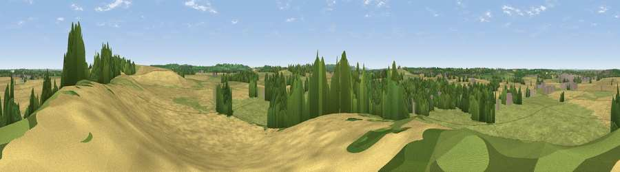

Viewpoint near Ladbroke
#37235 in England · top 77% of its area beats it · near Ladbroke · path 186 mWhere it is
The exact computed spot (SP 42325 59125). Click the marker for map links.
Public access: the nearest public right of way is about 186 m away — the final stretch may cross private land. Computed from Natural England's CRoW access layer and OpenStreetMap rights of way — not the legal definitive map. Always verify locally.
The view, rendered

A 360° render of this exact spot computed from the terrain model, tree cover and land cover — summer colours, afternoon light, calibrated against photographs of famous viewpoints. Real trees, hedges and buildings will differ in detail.
The panorama
Grey silhouette: terrain skyline in each direction (720 bearings, Earth curvature and refraction included). Dashed green: skyline with trees (+15 m) and buildings (+8 m) as obstacles. Blue strip: how far the ground is visible on each bearing.
Where the view opens
Wedge length = distance to the farthest visible ground on that bearing (vegetation-aware). Rings at 10, 25 and 50 km.
What fills the view
52% grassland · 37% cropland · 9% woodland · 2% built-up
Angular shares of the visible panorama (visual magnitude), not map area. Landscape diversity 0.44 (0–1 Shannon).
Key numbers
More beautiful places nearby
The staircase of upgrades: each row has a higher view potential than everything closer. Driving times are estimates from straight-line distance, calibrated against real road routing — check an actual route before setting out.
| Place | Direction | Drive | Score |
|---|---|---|---|
| Viewpoint near Ladbroke | ENE · 1 km | ~3 min | 36.8 |
| Viewpoint near Stockton | NNE · 6 km | ~12 min | 39.4 |
| Viewpoint near Priors Hardwick | SE · 6 km | ~13 min | 51.8 |
| Beacon Hill | ENE · 7 km | ~14 min | 60.2 |
| Viewpoint near Lower Shuckburgh | ENE · 7 km | ~15 min | 61.6 |
| Viewpoint near Northend | SSW · 8 km | ~15 min | 65.3 |
| Viewpoint near Northend | SSW · 8 km | ~16 min | 69.7 |
| Viewpoint near Northend | SSW · 8 km | ~16 min | 70.3 |
52.22871, -1.38174 · source: screening · position refined by local search. Computed location — check access rights before visiting.